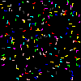
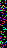
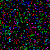

A collection of Java scripts designed to create and modify 2D game levels using two distinct procedural generation techniques.

This method, found in LevelCreate.java, starts with a random noise image. It then intelligently processes the image to remove isolated "stray" pixels and simplify complex clusters, resulting in more organic, cave-like structures.


The second method, implemented in LevelCreate2.java, acts like a generative art tool. It uses a predefined library of shapes (like L-shapes, lines, and corners) and randomly places them onto a grid until the level is populated, ensuring no shapes overlap.
You can easily run these scripts yourself to generate new levels. You'll need a Java Development Kit (JDK) installed.